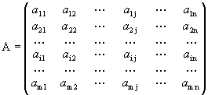

<meta charset="utf-8">
<ons-page class="center">
<ons-scroller class="center">

	<h4 align="left" style="font-family: 'Lato';">Matrices</h4>
<div align="justify" style="font-family: 'Lato';">Se denomina matriz a todo conjunto de n&uacute;meros o expresiones dispuestos en forma rectangular, formando filas y columnas.

Matriz
<br>
<br>
<center ></center>

<br>


<h4 align="left" style="font-family: 'Lato'; font-size="11px"">Elemento de una matriz</h4>

<div align="justify" style="font-family: 'Lato';font-size="11px""">Cada uno de los n&uacute;meros de que consta la matriz se denomina elemento.

Un elemento se distingue de otro por la posici&oacute;n que ocupa, es decir, la fila y la columna a la que pertenece.</div>
<br>
<h4 align="left" style="font-family: 'Lato';">Dimensi&oacute;n de una matriz</h4>

<div align="justify" style="font-family: 'Lato';">El n&uacute;mero de filas y columnas de una matriz se denomina dimensi&oacute;n de una matriz. As&iacute;, una matriz de dimensi&oacute;n mxn es una matriz que tiene m filas y n columnas.

De este modo, una matriz puede ser de dimensi&oacute;n: 2x4 (2 filas y 4 columnas), 3x2 (3 filas y 2 columnas), 2x5 (2 filas y 5 columnas).

S&iacute; la matriz tiene el mismo n&uacute;mero de filas que de columnas, se dice que es de orden: 2, 3, 4, ...

El conjunto de matrices de m filas y n columnas se denota por Amxn o (aij).

Un elemento cualquiera de la misma, que se encuentra en la fila i y en la columna j, se denota por aij.</div>
</ons-page>